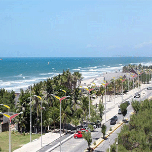
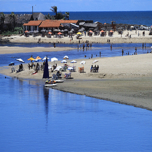
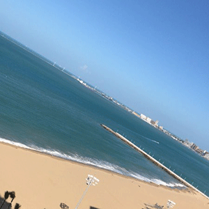
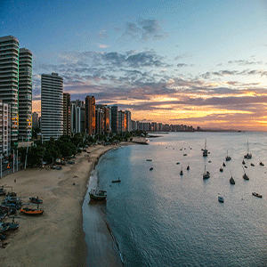

Praia do futuro
Dona de uma beleza natural unica a praia do futuro faz o meio termo entre, um paraiso deserto e ponto de encontro da população de fortyaleza e turistas a puocos metros da agitação da cidade o charme de praia deserta não se abala.
Para que seja possivel esse ar de paraiso a natureza presenteou esa praia com sistema natural de defesa contra o avanço urbano, a alta salinidade do seu ar faz com que estruturas que compoem predios ou outras construçoes se deteriorem muito rapido, por isso quem visita a praia nota a distancia entre as estruras urbanas e sua orla, se interessou ?, saiba mais
Praia do cofeco
Praia do cofeco, as suas dunas podem ser vistas a varios quilometros as belezas de suas dunas e agua que contrasta com a cor dos bancos de areia, um desenho ipensavel e inalcançavel pro melhor pintor. entre o barulho das ondas e o clima quente a praia cofeco conta com barracas enormes, de madeira com telhados de palha que adicionam ao cenario mais beleza.
As barracas de palha abrigam uma grande variedade de restaurantes e bares que ficam totalemente a disposição do cliente, oferecendo tudo oque de melhor fortaleza tem em sua culinaria.
Praia de iracema
A praia de iracema possui uma abordagem mais urbana tendo em vista que fica poucos metros dos predios que povoam a orla de fortaleza, na grande maioria são hoteis, alem de levar o nome da india mais famosa da literatura cearence, esta praia conta com uma vista impressionante do incrivel mara hope, nos anos 80 este navio pretroleiro encalhou n praia e ate hoje enfeita a vista da praia, ponto de encontro de mergulhadores e alguns turistas aventureiros.
A pria de iracema tem a estatua da india iracema, uma obra incrivel feita pelo artista pernanbucano José Corbiniano Lins.
Praia do mucuripe
Pesca artesanal, jangadas e por do sol esses são os principais itens que chamam mais a atenção em um dos nossos maisores tesouros, a pria do mucuripe conta um pouco da historia da economia de fortaleza pois ao fim de tarde e possivel notar o grnade numero de jangadas na orla,trata-se jangadas pesqueiras, que mesmo após a evuloção da tecnologia nautica de pesca, os ainda são usadas por pescadores artesanais e isso traz uma ligação entre o pasado eo futuro, ostrando um pouco de nossa cultura.
Os frutos da pesca artesanalç podem ser consumidos no mercado dos peixes onde esses frutos do mar podem ser consumidops fritos ou cozidos se for o caso, tudo com muito capricho feito por excelentes cozinheiros quer frutos do mar frescos ? , é lá que você vai encontrar visite.
Informações Geográficas
A cidade de fortaleza ocupa uma área de aproixmadamente 313,8 km², divididos entre seus bairros praias e outros.